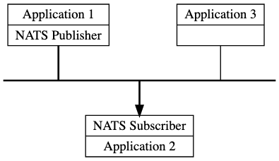
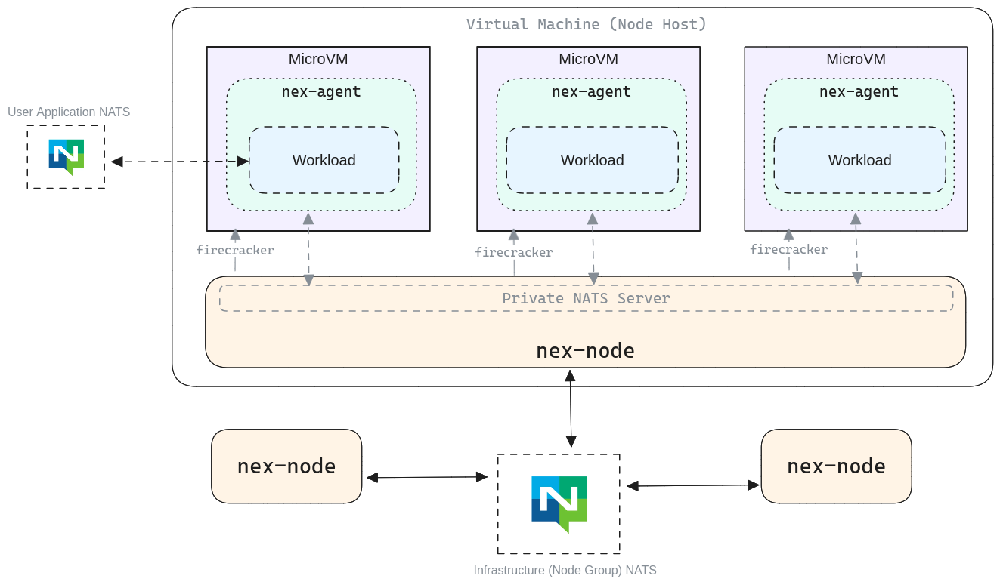
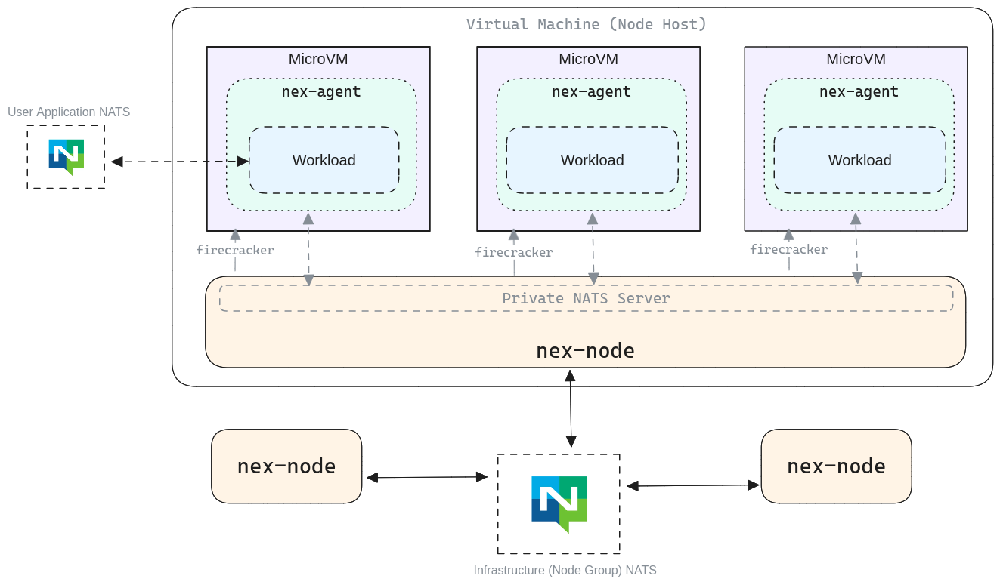

Well, Nats is a bit different type, developers themselves call it message oriented middleware (we can say that it is some kind of ESB)
Here you can see a principle of NAT's work 
As you can observe, it is really simple message queue/ESB In NATS, messages are published to subjects—hierarchical string values that subscribers monitor to receive messages. Known for its high throughput and low latency, NATS supports multiple message formats, including JSON, XML, and plain text.
 Here is architecture

Here is architecture

So, what are pros ?
- Lightweight and High Performance: Delivers excellent performance with minimal resource consumption.
- Delivery Guarantees: Provides both at-most-once and at-least-once messaging semantics.
- User-Friendly: Easy to deploy and manage, without requiring a dedicated cluster.
- Scalable: Designed to scale efficiently in distributed systems and microservices architectures.